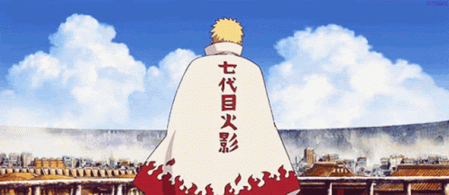

Naruto: Shippuden is an anime television series mainly adapted from Part II of Masashi Kishimoto's original Naruto manga series, with exactly 500 episodes. It is set two and a half years after the original series in the Naruto universe, following the teenage ninja Naruto Uzumaki and his allies.